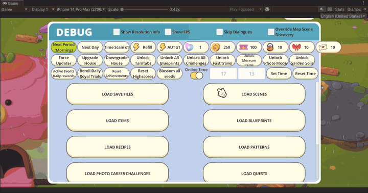

Save File Management
Save File Selector
Because TAK is such a massive story-driven game, we needed a way to store and test different save files so we didn’t have to play the game from scratch each time we needed to test some quest.
The way we did it before this tool was to just manually store, modify and replace files manually each time, which became very tedious and repetitive, thus the idea for this tool.

In essence, it’s a savefile database we could search and filter, open for modification, and load savefiles in with one click.
We also added some extra features, like being able to play a savefile directly from the scene it was saved in, where previously we would’ve had to go through the main menu.
As the game progressed in development the tool kept getting updated as needed, for example, when we changed the time management system so that it worked with the current date, I implemented a check that would override the savefile’s date with the current one, so a change of they wouldn’t trigger and a save file could be tested even if it was on a different day from its creation.
Cloud Save Files
When discussing workflow changes with the QA team, it was clear they needed a way to save and load save files from and to different devices, since they didn’t necessarily have access to the editor tool
We also had a limitation in terms of server costs, we didn’t have the resources to justify maintaining an internal server for this purpose, so we ended up using Unity’s Cloud Save functionality, in a bit of an unorthodox way.
{kind=link}

We setup users for each QA team member, in which they could log in and store their own savefiles using unity’s servers. This feature and technology didn’t reach players, as we needed to go through iCloud to do proper cloud savefile management, but it was still a useful tool for internal testing.
Save File Updater Architecture
When the game approached its launch date, it was clear we were gonna need a way to easily and automatically upgrade player save files, since we were rutinely restructuring quests and character logic and it was very easy for a player to get stuck in an impossible state if they updated at the wrong time.
I proposed a save file updating architecture that made it very simple for the rest of the programming team to make changes to player save files.
The idea was to create one function every time a given version needed some changes made to a savefile. When a savefile was loaded, it would trigger all functions from the version it was in all the way up to the current one, this way these changes could be applied in a cascading manner and we reduced the possibility for corrupted save files, even if players updated from really old save files.
The logic for selecting which functions to run was something similar to this, where the methods implementing a given attribute were recovered using reflection, ordered and executed if needed.
public void UpdateSavegame(SavegameData data, bool force)
{
var dictionary = GetMethodDictionary();
var orderedAttributeList = dictionary.Keys
.OrderBy(attr => attr.major)
.ThenBy(attr => attr.minor)
.ThenBy(attr => attr.patch)
.ToList();
foreach (var attribute in orderedAttributeList)
{
if (IsVersionGreater(GetVersionString(attribute.major, attribute.minor, attribute.patch), data.Version))
{
dictionary[attribute].Invoke(this, new object[] { data });
data.Version = $"{attribute.major}.{attribute.minor}.{attribute.patch}";
Debug.Log($"Updating to version: {data.Version}");
}
}
data.Version = Application.version;
}
This way, creating new updating functions is as simple as this, and the system automatically applies the savefile updates.
[ExecuteWhenVersion(2, 6, 0)]
public void Update_2_6_0(SavegameData data)
{
//Update code goes here
}